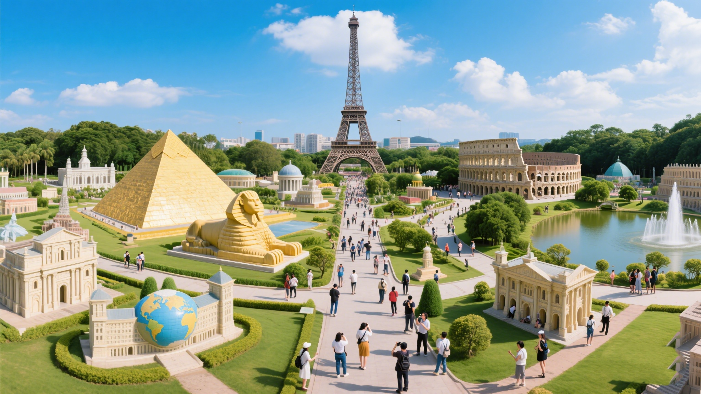

广东热门旅游景点推荐
广东集自然奇观、人文经典与现代乐园于一体，以下精选不同类型的优质景点，满足多元旅行需求
🌄 自然奇观

世界自然遗产
丹霞山
以"色如渥丹，灿若明霞"的赤壁丹崖闻名，拥有680多座石峰、石墙、石柱，是全球丹霞地貌命名地。推荐玩法：长老峰观日出、阳元石地质探秘、锦江竹筏漂流。
城市地标
广州塔（小蛮腰）
600米中国第一高塔，可体验488米户外观景平台、极速云霄跳楼机、450米高空摩天轮。夜晚灯光秀与珠江夜景交相辉映，是感受广州现代魅力的绝佳窗口。
🏯 人文经典
世界文化遗产
开平碉楼与村落
融合中西建筑风格的华侨文化代表，1800多座碉楼散落在田园之间。推荐自力村（《让子弹飞》取景地）、马降龙村（竹林中的碉楼群），感受侨乡历史与田园风光。
岭南文化
佛山祖庙
始建于北宋的道教庙宇，集陶塑、木雕、砖雕"三雕"艺术于一身。每日有醒狮表演和黄飞鸿武术展示，是体验广府文化的活态博物馆。
🎡 亲子乐园

全球顶级乐园
长隆旅游度假区
涵盖野生动物世界（看熊猫、考拉）、欢乐世界（垂直过山车）、水上乐园（夏季必玩）、海洋王国（白鲸表演）四大主题园，一站式满足家庭游玩需求。

环球文化体验
深圳世界之窗
130多个世界著名景观微缩模型，从埃菲尔铁塔到泰姬陵，从亚马逊雨林到非洲草原。夜晚大型歌舞晚会《盛世纪》融合全球文化，适合带孩子开阔视野。